SLIDE 01
What is Attachment?

- A strong, enduring emotional bond that develops between an infant and a caregiver.
- Functions:
- Provides a sense of security and comfort.
- Serves as a "secure base" from which the infant can explore the world.
- Acts as a "safe haven" to return to in times of stress or fear.
- Visible Signs of Attachment: Warm greetings, active efforts to make contact, proximity-seeking (crawling to parent), and separation protest (distress when the parent leaves).
SLIDE 02
The Evolutionary Blueprint: Ethological Theory
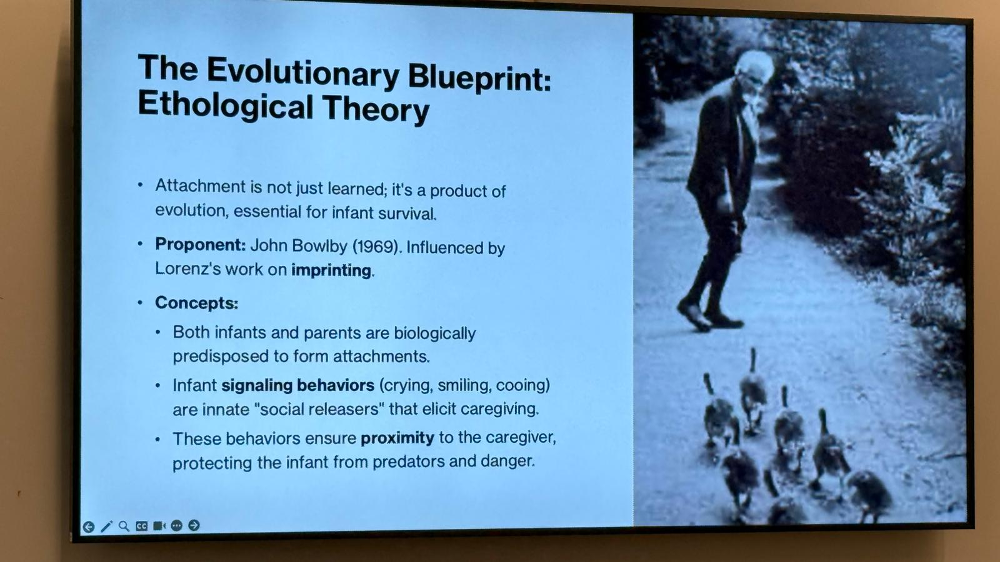
- Attachment is not just learned; it's a product of evolution, essential for infant survival.
- Proponent: John Bowlby (1969). Influenced by Lorenz's work on imprinting.
- Concepts:
- Both infants and parents are biologically predisposed to form attachments.
- Infant signaling behaviors (crying, smiling, cooing) are innate "social releasers" that elicit caregiving.
- These behaviors ensure proximity to the caregiver, protecting the infant from predators and danger.
SLIDE 03
Innate Building Blocks: Reflexes and Signaling Mechanisms
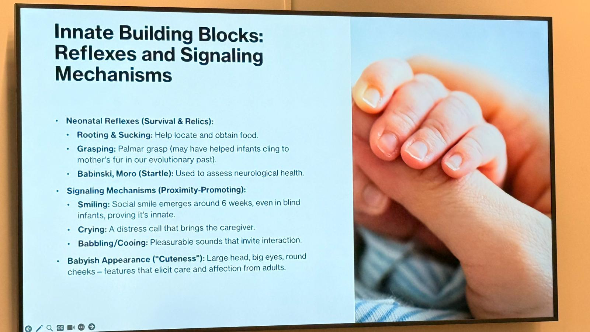
- Neonatal Reflexes (Survival & Relics):
- Rooting & Sucking: Help locate and obtain food.
- Grasping: Palmar grasp (may have helped infants cling to mother's fur in our evolutionary past).
- Babinski, Moro (Startle): Used to assess neurological health.
- Signaling Mechanisms (Proximity-Promoting):
- Smiling: Social smile emerges around 6 weeks, even in blind infants, proving it's innate.
- Crying: A distress call that brings the caregiver.
- Babbling/Cooing: Pleasurable sounds that invite interaction.
- Babyish Appearance ("Cuteness"): Large head, big eyes, round cheeks – features that elicit care and affection from adults.
SLIDE 04
The Timeline of Attachment (Schaffer's Phases)
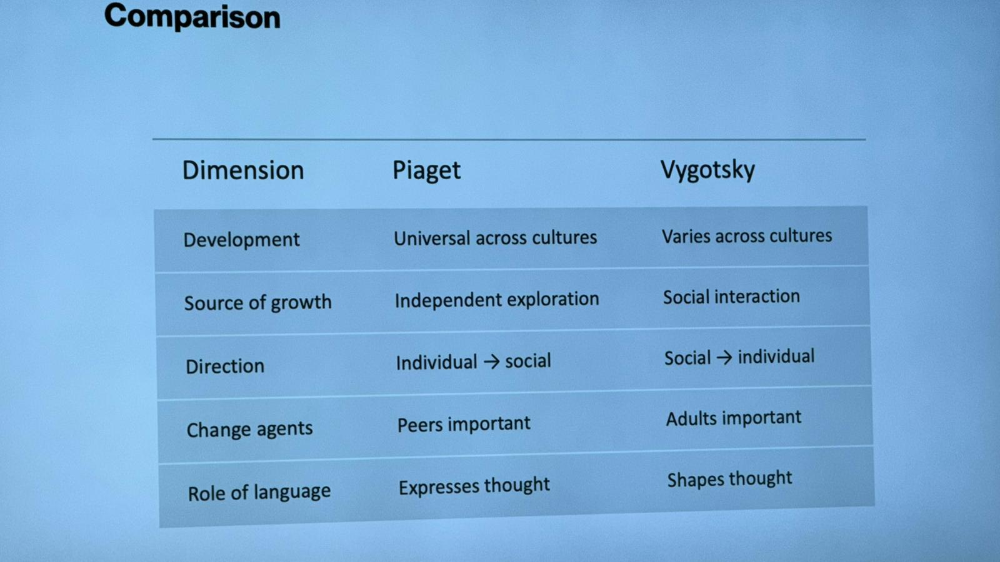
| Phase | Age Range | Principal Features |
|---|---|---|
| 1. Pre-attachment | 0–2 months | Indiscriminate social responsiveness; babies respond similarly to any caregiver. |
| 2. Attachment-in-the-Making | 2–7 months | Recognition of familiar people; preference for primary caregivers, but no protest upon departure. |
| 3. Clear-cut Attachment | 7–24 months | Separation protest appears; wariness of strangers; active seeking of contact with specific attachment figures. |
| 4. Goal-Corrected Partnership | 24+ months | Relationship becomes more two-sided; children begin to understand parents' feelings, goals, and plans. |
SLIDE 05
The Caregiver's Role: The "Strange Situation"
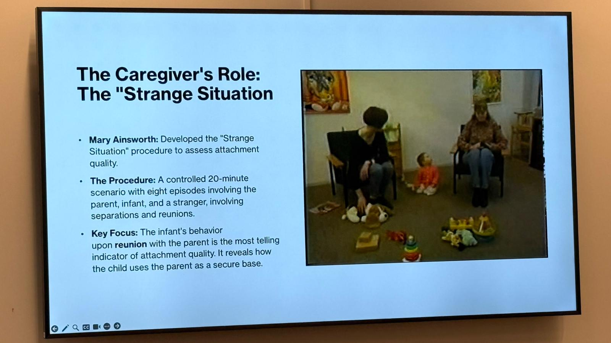
- Mary Ainsworth: Developed the "Strange Situation" procedure to assess attachment quality.
- The Procedure: A controlled 20-minute scenario with eight episodes involving the parent, infant, and a stranger, involving separations and reunions.
- Key Focus: The infant's behavior upon reunion with the parent is the most telling indicator of attachment quality. It reveals how the child uses the parent as a secure base.
SLIDE 06
Patterns of Attachment: The Four Types
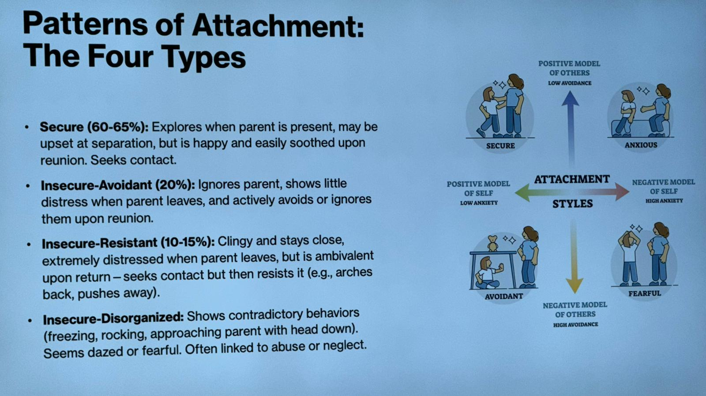
- Secure (60–65%): Explores when parent is present, may be upset at separation, but is happy and easily soothed upon reunion. Seeks contact.
- Insecure-Avoidant (20%): Ignores parent, shows little distress when parent leaves, and actively avoids or ignores them upon reunion.
- Insecure-Resistant (10–15%): Clingy and stays close, extremely distressed when parent leaves, but is ambivalent upon return – seeks contact but then resists it (e.g., arches back, pushes away).
- Insecure-Disorganized: Shows contradictory behaviors (freezing, rocking, approaching parent with head down). Seems dazed or fearful. Often linked to abuse or neglect.
SLIDE 07
The Critical Role of Fathers: Beyond the Mother-Infant Dyad
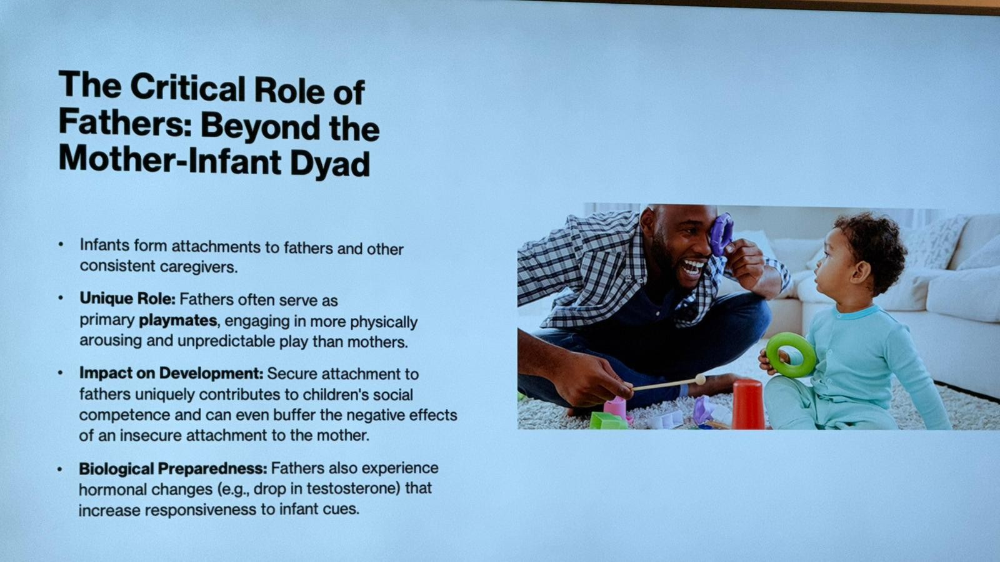
- Infants form attachments to fathers and other consistent caregivers.
- Unique Role: Fathers often serve as primary playmates, engaging in more physically arousing and unpredictable play than mothers.
- Impact on Development: Secure attachment to fathers uniquely contributes to children's social competence and can even buffer the negative effects of an insecure attachment to the mother.
- Biological Preparedness: Fathers also experience hormonal changes (e.g., drop in testosterone) that increase responsiveness to infant cues.
SLIDE 08
A Note on Culture and Attachment
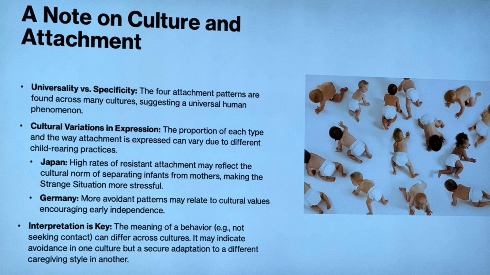
- Universality vs. Specificity: The four attachment patterns are found across many cultures, suggesting a universal human phenomenon.
- Cultural Variations in Expression: The proportion of each type and the way attachment is expressed can vary due to different child-rearing practices.
- Japan: High rates of resistant attachment may reflect the cultural norm of separating infants from mothers, making the Strange Situation more stressful.
- Germany: More avoidant patterns may relate to cultural values encouraging early independence.
- Interpretation is Key: The meaning of a behavior (e.g., not seeking contact) can differ across cultures. It may indicate avoidance in one culture but a secure adaptation to a different caregiving style in another.
SLIDE 09
What Shapes Attachment Quality? Internal & External Influences
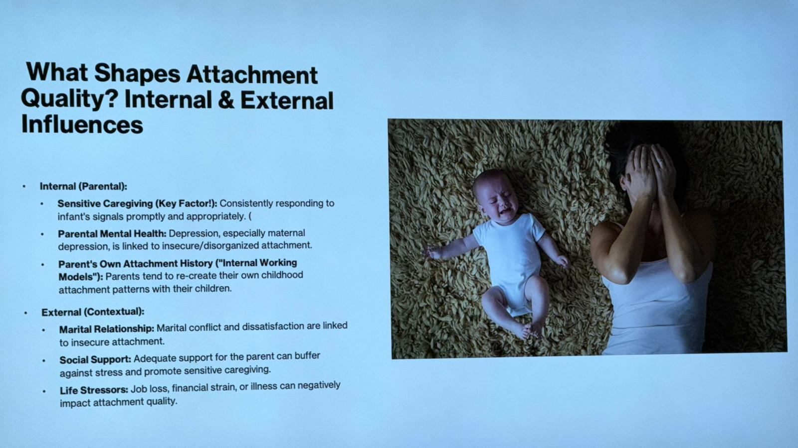
- Internal (Parental):
- Sensitive Caregiving (Key Factor!): Consistently responding to infant's signals promptly and appropriately.
- Parental Mental Health: Depression, especially maternal depression, is linked to insecure/disorganized attachment.
- Parent's Own Attachment History ("Internal Working Models"): Parents tend to re-create their own childhood attachment patterns with their children.
- External (Contextual):
- Marital Relationship: Marital conflict and dissatisfaction are linked to insecure attachment.
- Social Support: Adequate support for the parent can buffer against stress and promote sensitive caregiving.
- Life Stressors: Job loss, financial strain, or illness can negatively impact attachment quality.
SLIDE 10
The Impact of Postnatal Depression (PND) on the Child
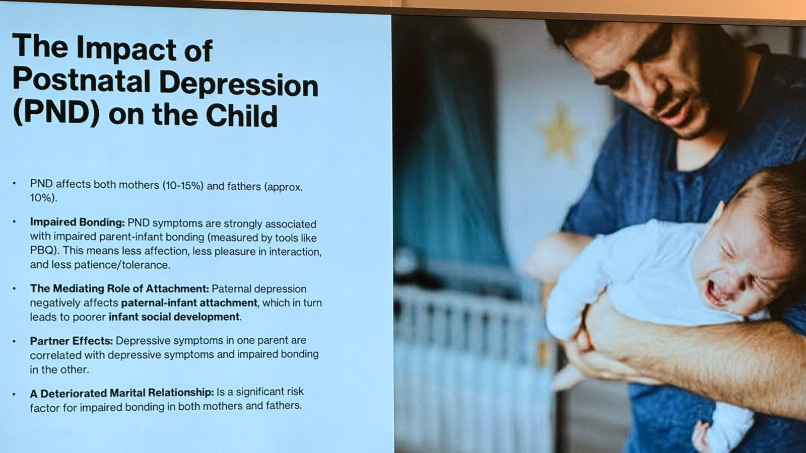
- PND affects both mothers (10–15%) and fathers (approx. 10%).
- Impaired Bonding: PND symptoms are strongly associated with impaired parent-infant bonding (measured by tools like PBQ). This means less affection, less pleasure in interaction, and less patience/tolerance.
- The Mediating Role of Attachment: Paternal depression negatively affects paternal-infant attachment, which in turn leads to poorer infant social development.
- Partner Effects: Depressive symptoms in one parent are correlated with depressive symptoms and impaired bonding in the other.
- A Deteriorated Marital Relationship: Is a significant risk factor for impaired bonding in both mothers and fathers.
SLIDE 11
Stability and Change in Attachment
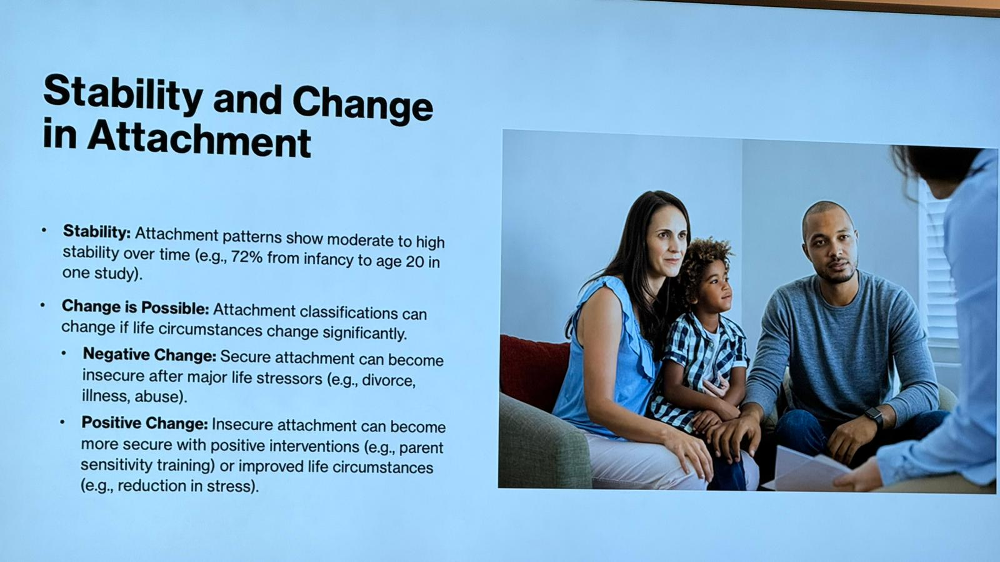
- Stability: Attachment patterns show moderate to high stability over time (e.g., 72% from infancy to age 20 in one study).
- Change is Possible: Attachment classifications can change if life circumstances change significantly.
- Negative Change: Secure attachment can become insecure after major life stressors (e.g., divorce, illness, abuse).
- Positive Change: Insecure attachment can become more secure with positive interventions (e.g., parent sensitivity training) or improved life circumstances (e.g., reduction in stress).
SLIDE 12
Consequences of Attachment: From Infancy to Adulthood
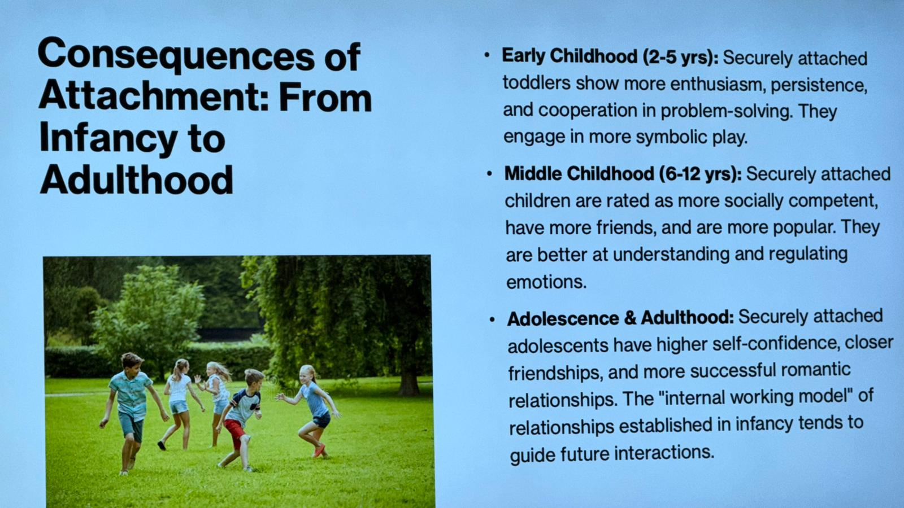
- Early Childhood (2–5 yrs): Securely attached toddlers show more enthusiasm, persistence, and cooperation in problem-solving. They engage in more symbolic play.
- Middle Childhood (6–12 yrs): Securely attached children are rated as more socially competent, have more friends, and are more popular. They are better at understanding and regulating emotions.
- Adolescence & Adulthood: Securely attached adolescents have higher self-confidence, closer friendships, and more successful romantic relationships. The "internal working model" of relationships established in infancy tends to guide future interactions.
SLIDE 13
Take Aways
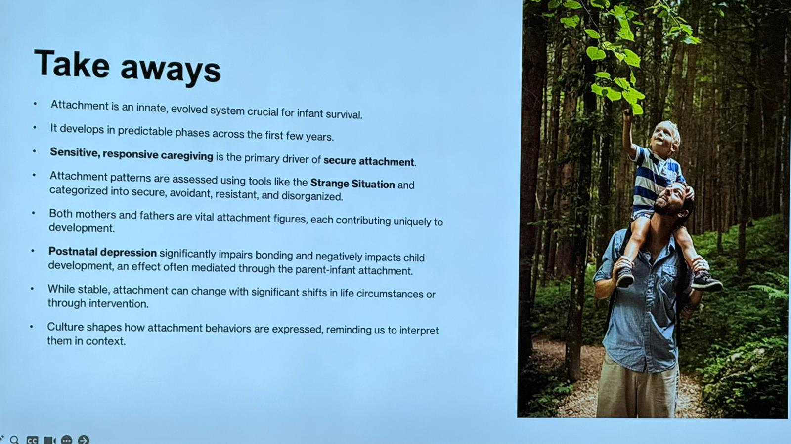
- Attachment is an innate, evolved system crucial for infant survival.
- It develops in predictable phases across the first few years.
- Sensitive, responsive caregiving is the primary driver of secure attachment.
- Attachment patterns are assessed using tools like the Strange Situation and categorized into secure, avoidant, resistant, and disorganized.
- Both mothers and fathers are vital attachment figures, each contributing uniquely to development.
- Postnatal depression significantly impairs bonding and negatively impacts child development, an effect often mediated through the parent-infant attachment.
- While stable, attachment can change with significant shifts in life circumstances or through intervention.
- Culture shapes how attachment behaviors are expressed, reminding us to interpret them in context.
MCQ Questions
SLIDE 14
MCQ Questions
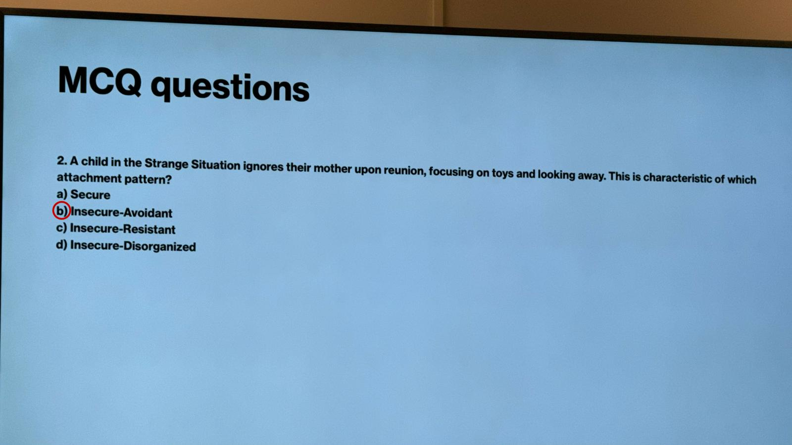
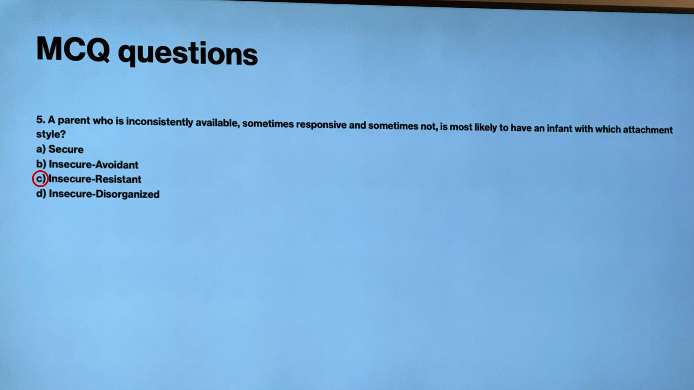
1. According to Schaffer's phases, at what age does 'clear-cut attachment,' marked by separation protest, typically begin?
- a) 0–2 months
- b) 2–7 months
- c) 7–24 months ✓
- d) 24+ months
2. A child in the Strange Situation ignores their mother upon reunion, focusing on toys and looking away. This is characteristic of which attachment pattern?
- a) Secure
- b) Insecure-Avoidant ✓
- c) Insecure-Resistant
- d) Insecure-Disorganized
5. A parent who is inconsistently available, sometimes responsive and sometimes not, is most likely to have an infant with which attachment style?
- a) Secure
- b) Insecure-Avoidant
- c) Insecure-Resistant ✓
- d) Insecure-Disorganized
Cognitive Development
SLIDE 15
Preoperational Stage (2–7 Years) – Symbolic Thinking
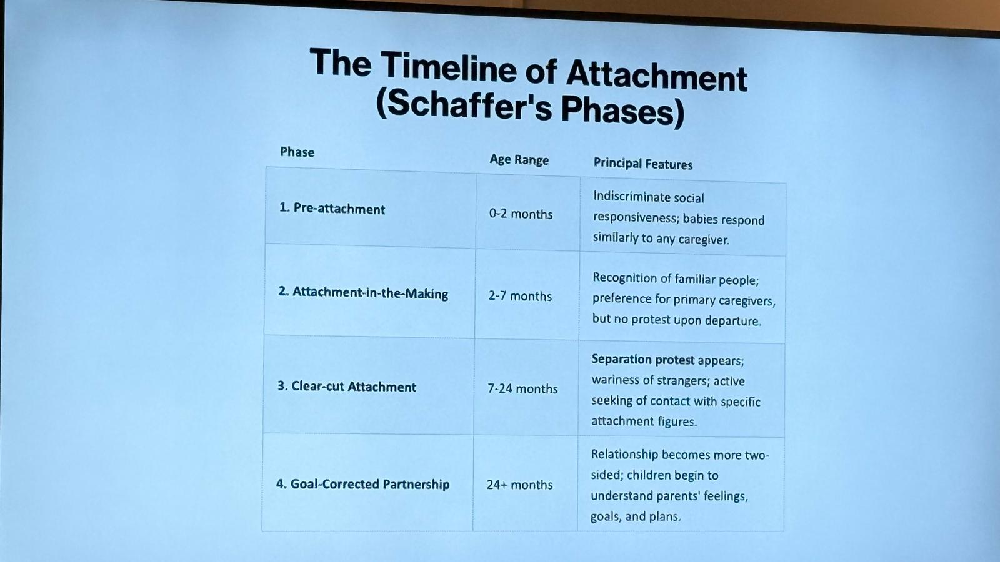
- Emergence of Symbolic Thought
- Symbolic function: Using words/images to represent experiences
- Representational insight: Knowing one thing can stand for another
- Dual representation (DeLoache): Representing an object in two ways simultaneously
- DeLoache's Scale Model Studies
- 3-year-olds succeed; 2½-year-olds fail
- Why? 2½-year-olds lack dual representation
- Scale models are interesting objects AND symbols – harder than photos
- Key Deficits
- Animism: Attributing life to inanimate objects
- Egocentrism: Difficulty seeing others' perspectives (three-mountain task)
- Centration: Focusing on one aspect, ignoring others
- No conservation: Don't understand properties remain despite appearance changes
- No reversibility: Cannot mentally undo an action
SLIDE 16
Comparison: Piaget vs. Vygotsky
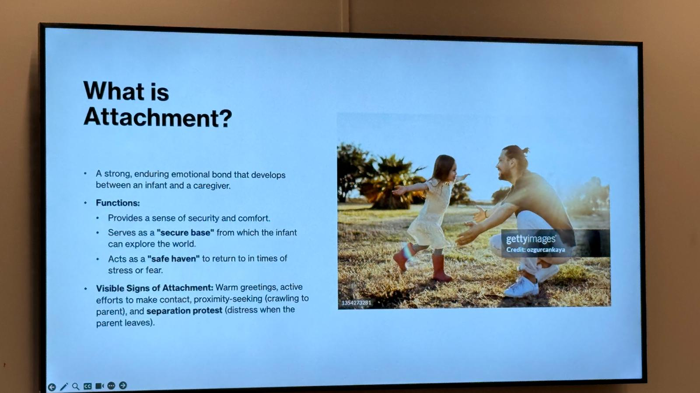
| Dimension | Piaget | Vygotsky |
|---|---|---|
| Development | Universal across cultures | Varies across cultures |
| Source of growth | Independent exploration | Social interaction |
| Direction | Individual → social | Social → individual |
| Change agents | Peers important | Adults important |
| Role of language | Expresses thought | Shapes thought |